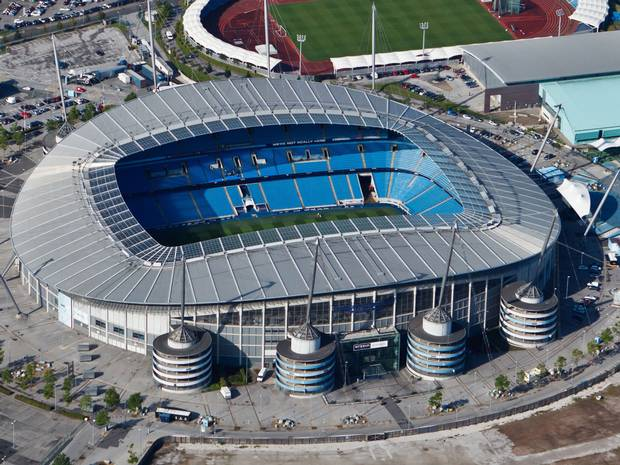

<table>
<tr>
<th>Championships</th>
<th>club stadium </th>
<th>Historic scorer</th>
</tr>
<tr>
<td><i class="fas fa-broom"></i></td>
<td><i class="fas fa-archive"></i></td>
<td><i class="fas fa-trailer"></i></td>
</tr>
<tr>
<td>
   The number of tournaments</td>
<td>Manchester City Stadium Capacity: 53,400</td>
<td>178</td>
</tr>

</table>
